This paper is essentially providing a new approach to generalizations of
the F.&M. Riesz Theorems, for example, such results as that
of Helson and Lowdenslager [16,17]. They showed that if
 is a compact abelian group with ordered dual, and if
is a compact abelian group with ordered dual, and if  is an
analytic measure (that is, its Fourier transform is supported
on the positive elements of the dual), then it follows that the singular
and absolutely continuous parts (with respect to the Haar measure) are also
analytic.
is an
analytic measure (that is, its Fourier transform is supported
on the positive elements of the dual), then it follows that the singular
and absolutely continuous parts (with respect to the Haar measure) are also
analytic.
Another direction is that provided by Forelli [12]
(itself a generalization of the result of
de Leeuw and Glicksberg [9]),
where one has an
action of the real numbers 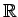 acting on a locally compact topological
space  , and a Baire measure
, and a Baire measure  on
on  that is analytic
(in a sense that we make precise below) with respect to the action. Then
again, the singular and absolutely continuous parts of
that is analytic
(in a sense that we make precise below) with respect to the action. Then
again, the singular and absolutely continuous parts of  (with respect
to any so called quasi-invariant measure) are also analytic.
(with respect
to any so called quasi-invariant measure) are also analytic.
Indeed common generalizations of both these ideas have been provided, for example, by Yamaguchi [23], considering the action of any locally compact abelian group with ordered dual, on a locally compact topological space. For more generalizations we refer the reader to Hewitt, Koshi, and Takahashi [19].
In the paper [4], a new approach to proving these kinds of results was given, providing a transference principle for spaces of measures. In that paper, the action was from a locally compact abelian group into a space of isomorphisms on the space of measures of a sigma algebra. A primary requirement that the action had to satisfy was what was called sup path attaining, a property that was satisfied, for example, by the setting of Forelli (Baire measures on a locally compact topological space). Using this transference principle, the authors were able to give an extension and a new proof of Forelli's result. This was obtained by using a Littlewood-Paley decomposition of an analytic measure.
In this paper we wish to continue this process, applying this same transference principle to provide the common generalizations of the results of Forelli and Helson and Lowdenslager. What we provide in this paper is essentially a decomposition of an analytic measure as a sum of martingale differences with respect to a filtration defined by the order. For each martingale difference, the action of the group can be described precisely by a certain action of the group of real numbers, and so we can appeal to the results of [4].
In this way, we can reach the following generalization
(see Theorem 6.4 below): if  is any
bounded operator on the space of measures that commutes with the action
(as does, for example, taking the singular part), and if
is any
bounded operator on the space of measures that commutes with the action
(as does, for example, taking the singular part), and if  is an
analytic measure, then
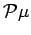 is also an analytic measure.
is an
analytic measure, then
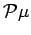 is also an analytic measure.
In the remainder of the introduction, we will establish our notation, including the notion of sup path attaining, and recall the transference principle from [4]. In Section 2, we will describe orders on locally compact abelian groups, including the extension of Hahn's Embedding Theorem provided in [1]. In Section 3, we define the notions of analyticity. This somewhat technical section continues into Section 4, which examines the role of homomorphism with respect to analyticity. The technical results basically provide proofs of what is believable, and so may be skipped on first reading. It will be seen that the concept of sup path attaining comes up again and again, and may be seen to be an integral part of all our proofs.
In Section 5, we are ready to present the decomposition of analytic measures. This depends heavily on transference of martingale inequalities of Burkholder and Garling, and then using the fact that weakly unconditionally summing series are unconditionally summing in norm for any series in a space of measures [5]. In Section 6, we then give applications of this decomposition, giving the generalizations that we alluded to above.
Throughout  will denote a
locally compact abelian group with dual group
will denote a
locally compact abelian group with dual group
 .
The symbols
.
The symbols  , and
, and  denote the integers, the real and complex numbers, respectively.
If
denote the integers, the real and complex numbers, respectively.
If  is a set, we denote the indicator
function of
is a set, we denote the indicator
function of  by
by  .
For
.
For
 ,
the space of Haar measurable functions
,
the space of Haar measurable functions  on
on  with
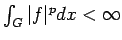 will be denoted by
with
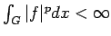 will be denoted by
 . The space of essentially
bounded functions on
. The space of essentially
bounded functions on  will be denoted by
will be denoted by
 . The expressions ``locally null''
and ``locally almost everywhere'' will have the same meanings as
in [20, Definition (11.26)].
. The expressions ``locally null''
and ``locally almost everywhere'' will have the same meanings as
in [20, Definition (11.26)].
Let
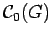 denote
the Banach space of continuous functions on
 vanishing at infinity.
The space of all complex regular Borel measures
on
vanishing at infinity.
The space of all complex regular Borel measures
on  ,
denoted by
,
denoted by  , consists of all complex measures
arising from bounded linear functionals on
.
, consists of all complex measures
arising from bounded linear functionals on
.
Let
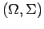 denote a
measurable space,
where  is a set and
is a set and  is a
sigma algebra of subsets of
is a
sigma algebra of subsets of  . Let
. Let  denote the
Banach space of complex measures on
denote the
Banach space of complex measures on  with the
total variation norm, and let
with the
total variation norm, and let
 denote the space of measurable
bounded functions on
denote the space of measurable
bounded functions on  .
.
Let
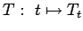 denote a representation of  by isomorphisms of
by isomorphisms of  .
We suppose that
.
We suppose that  is uniformly bounded,
i.e., there is a positive constant
is uniformly bounded,
i.e., there is a positive constant  such that
for all
such that
for all  , we have
, we have
Given a measure
and a Borel measure
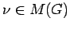, we define the `convolution'
 on
on  by
by
We will assume throughout this paper
that the representation  commutes with the
convolution (2) in the following sense:
for each
commutes with the
convolution (2) in the following sense:
for each  ,
,
The fact that the mapping
 is
measurable is a simple consequence of
the measurability of the mapping
for every
is
measurable is a simple consequence of
the measurability of the mapping
for every
 .
.
In [4] were provided many examples of sup path attaining representations. Rather than give this same list again, we give a couple of examples of particular interest.
(b)
Suppose that  and 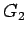 are locally compact abelian groups and that
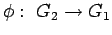 is a continuous homomorphism.
Define an action of on
and 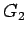 are locally compact abelian groups and that
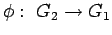 is a continuous homomorphism.
Define an action of on  (the regular Borel measures
on
(the regular Borel measures
on  ) by translation by
) by translation by  .
Hence, for
.
Hence, for
 , and any
Borel subset
, and any
Borel subset
 , let
, let
 .
Then every
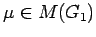 is weakly measurable, and the
representation
is sup path attaining with constants 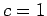 and
.
Then every
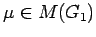 is weakly measurable, and the
representation
is sup path attaining with constants 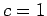 and  .
.
We now recall some basic definitions from spectral theory.
If  is an ideal in
is an ideal in  , let
, let
Using properties of the convolution  ,
it is straightforward to show that
is a closed ideal
in
,
it is straightforward to show that
is a closed ideal
in  .
.
If
The main result of [4] is the following transference theorem.
| (10) | 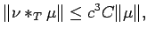 |